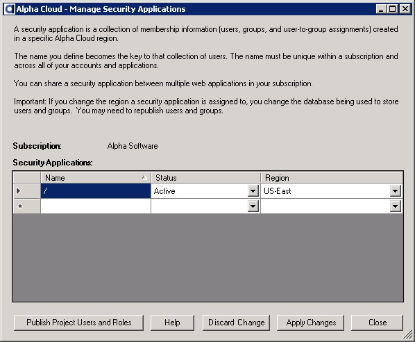
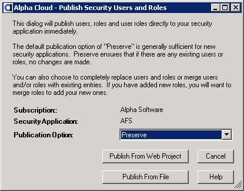
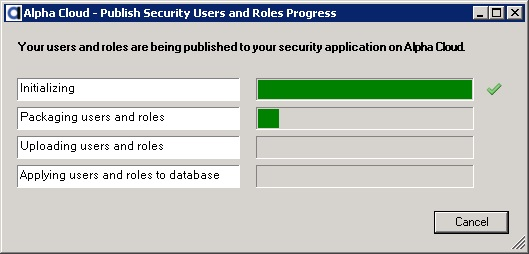
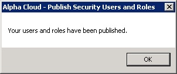

Alpha Cloud - Alpha Anywhere Developer's Guide
Overview
Adding and Updating Security Applications
Publishing Users and Roles
A Security Application is a collection of users and roles identified by a unique name and stored in a database in the Alpha cloud region you choose.
Security Applications can be shared across web applications you deploy within the same subscription and region.
Each Security Application you define must have a name that is unique within your subscription.
Security Applications are fairly simple objects. They have a name, a status and an assigned region.
When you publish an application for the first time, a security application may be created automatically.
By default, Alpha Cloud will create a different security application for each deployment, but you can choose an existing security application in the same region if you wish.
Security Application names must be unique within a subscription.
Names you add and set to a status of "Active" are available for deployment.
Any deployment that references the same security application name will share users, groups and session state.
Note: Alpha Cloud isolates your security applications from those of other subscriptions.
Sharing security applications across subscriptions is not supported.
To manage your security applications from within Alpha Anywhere:
- Click on the Alpha Cloud toolbar icon in the web control panel and select "Security" and then "Security Applications" from the drop down menu.

The "Manage Security Applications" dialog will display

To add a new application, click in the empty row at the bottom of the grid.
Enter a unique name and select the status for your new security application.
Select the region the security application will be used in.
Warning: If you change the region a security application is to be used in, data from the previous region will be retained, but will not be available.
You will need to republish security users, roles and user-roles to the new region.
When you have finished making changes, click "Apply Changes" to update the cloud or click "Discard Changes" to reset the dialog data.
Note: For safety reasons, security applications cannot be deleted from within Alpha Anywhere.
You can disable a security application to remove it from use.
If you disable a security application, web applications referencing it will no longer be deployed.
Although you will generally publish users and roles when you deploy your web application for the first time,
you may have a need to publish users and/or roles without publishing and deploying a new version of your application.
You can publish users and roles for the currently selected web application from the "Manage Security Applications" dialog just discussed.
- Click on the Alpha Cloud toolbar icon in the web control panel and select "Security" and then "Security Applications" from the drop down menu.
The "Manage Security Applications" dialog will display
Click on the security application row you want to publish your users and roles to.
Click the button at the bottom left of the dialog labeled "Publish Project Users and Roles" to open the "Publish Security Users and Roles" dialog.

Select the publish option that best describes what you want to accomplish.
The default option of "Preserve" will only publish users and groups if they have not been published for your security application previously.
Options for publishing Users and Roles are:
- Preserve - Publish only if no users or roles are found.
- Ignore - Do not publish users and roles.
- Merge - Add new users and roles.
- Replace - Replace all users and roles.
- Merge Roles - Add new roles.
- Replace Roles - Replace all roles.
You have two options for publication of users and roles:
Click the button labeled "Publish From Web Project" to publish users and roles from the current web project.
Click the button labeled "Publish From File" if you have an exported security file that you want to publish. You will be prompted for the file to upload.
In either case, the dialog below will display showing the progress of the publication.

When the publication is complete, you will see the following message box.

Click the button labeled "OK" to dismiss the message box.
Back on the progress dialog, click the button labeled "Close" to return to the "Manage Security Applications" dialog.
If you are finished updating security applications, click the button labeled "Close" to return to the web control panel.